The Critical Foundation of Safe Energy Storage
As Battery Energy Storage Systems (BESS) become integral to global renewable energy infrastructure, fire safety has emerged as one of the most pressing challenges facing the industry. The lithium-ion batteries that power modern BESS installations can undergo thermal runaway—a catastrophic chain reaction that, if uncontrolled, leads to fires, explosions, and significant operational losses. Understanding the mechanisms, design principles, detection technologies, and suppression strategies is essential for developers, operators, and regulators committed to safe and reliable energy storage deployment.
Understanding Thermal Runaway in Lithium-ion Batteries
The Physics of Fire in Battery Cells
Thermal runaway begins when a lithium-ion battery cell experiences a triggering event—such as internal cell defects, overcharging, mechanical damage, or electrical faults—that causes the cell's internal temperature to rise uncontrollably. This process is not a simple fire but rather a series of exothermic chemical reactions that escalate rapidly and are extremely difficult to stop once initiated.
The thermal runaway process unfolds in distinct temperature stages:
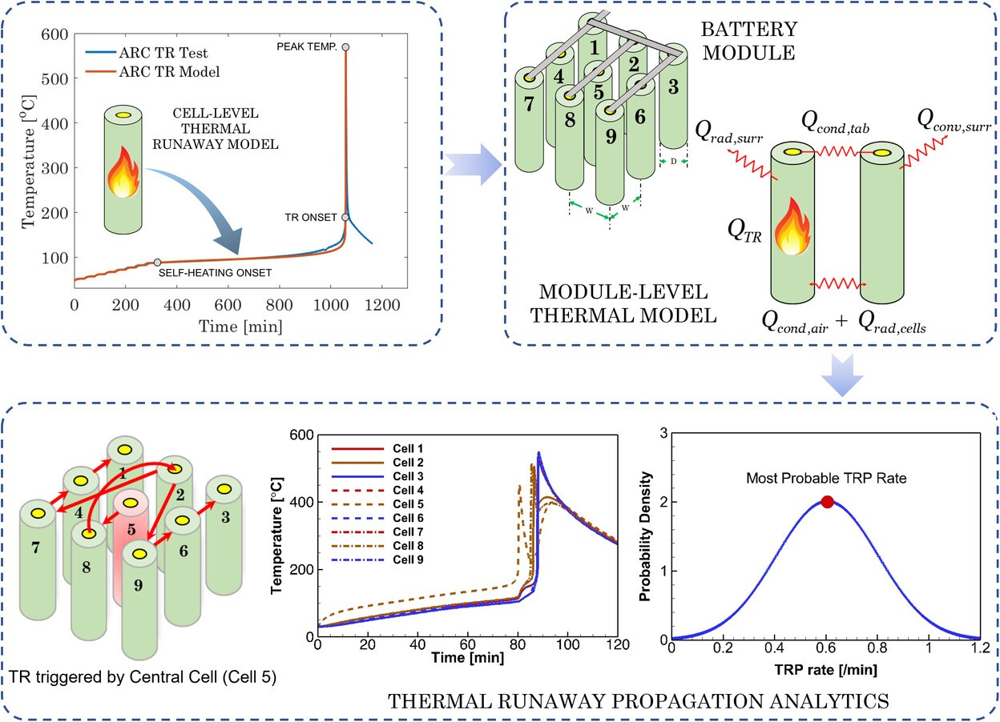
At temperatures exceeding 90°C, the solid electrolyte interphase (SEI), a protective layer on the anode, begins to decompose exothermically. Between 100-130°C, lithium intercalated in the anode reacts violently with organic solvents in the electrolyte, releasing flammable gases including hydrogen (H₂). As temperatures climb beyond 130°C, the polyethylene/polypropylene separator melts, causing internal short circuits that release stored electrochemical energy. At 200-300°C and beyond, cathode active materials decompose and release oxygen, which combusts the gases and electrolyte, creating enormous heat and pressure.
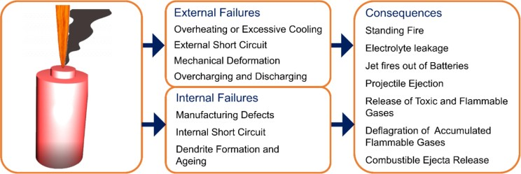
The chemical composition of gases released during thermal runaway includes carbon dioxide, carbon monoxide, hydrogen, ethylene, and methane. This mixture creates a highly flammable atmosphere, particularly in enclosed BESS containers. The most dangerous aspect of thermal runaway is its propagation potential—once initiated in a single cell, the intense heat transfers to adjacent cells, triggering a cascading failure that spreads through modules and entire battery racks with increasing speed.
The Arizona McMicken Incident: A Critical Lesson
The April 2019 explosion at Arizona Public Service's McMicken BESS facility in Surprise, Arizona, remains one of the most significant battery storage fires in U.S. history, injuring four firefighters and providing critical insights into thermal runaway propagation.
The incident began with an internal cell defect—abnormal lithium metal deposition and dendritic growth—in a single battery cell in rack 15. This defect triggered thermal runaway that cascaded through every cell and module in the rack, accelerated by inadequate thermal barriers between cells that should have slowed or halted propagation. The facility's clean agent fire suppression system activated as designed, but conventional suppression systems are engineered for ordinary combustible fires and cannot stop cascading thermal runaway in BESS environments.
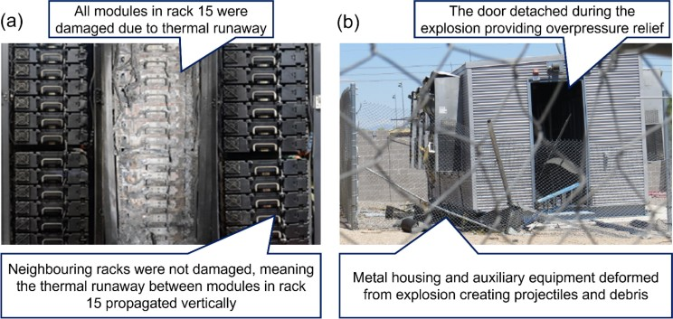
Over approximately three hours, the uncontrolled cascading thermal runaway generated a large volume of flammable gases within the BESS container. When firefighters opened the container door to investigate, the sudden influx of oxygen ignited these accumulated gases, causing an explosion that ejected doors, debris, and toxic fumes. The incident underscores several critical failures: inadequate cell-level isolation, insufficient suppression system design, poor ventilation and cooling design, and lack of specialized emergency response training for BESS facilities.
Design Principles for Fire-Safe BESS Facilities
Separation Distance Requirements
Site-level design begins with proper separation of BESS units from buildings and from each other. Current standards and industry guidance vary, reflecting the evolving nature of BESS fire safety requirements.
The International Fire Code (IFC 1207.8.3) mandates a minimum 10-foot (3.05 meters) separation between BESS units and any building. However, this represents a conservative baseline that may be insufficient for larger systems. Insurance industry guidelines are often more stringent. AEGIS Loss Control recommends approximately 25 feet (7.6 meters) between BESS enclosures or groups of enclosures, unless full-scale fire testing proves closer spacing is safe—the approach described as "the most effective way to protect property from fire and deflagration hazards.
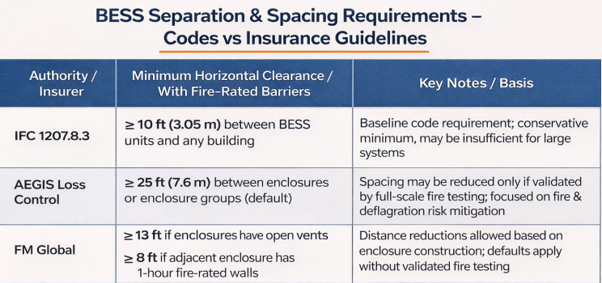
FM Global's guidance establishes distance reductions based on enclosure construction. For units with open vents, a 13-foot separation is required; this can be reduced to 8 feet if the adjacent enclosure has one-hour fire-rated walls. In the absence of validated fire testing, spacing must follow these conservative defaults.
In India, the draft CEA (Central Electricity Authority) regulations specify more prescriptive requirements: a minimum 7.5-meter distance between battery containers and the nearest exterior wall or roof overhang, with a 3-meter separation between battery containers unless large-scale fire testing validates alternative arrangements. These regulations reflect India's approach of establishing mandatory minimums while allowing deviations supported by comprehensive fire testing data.
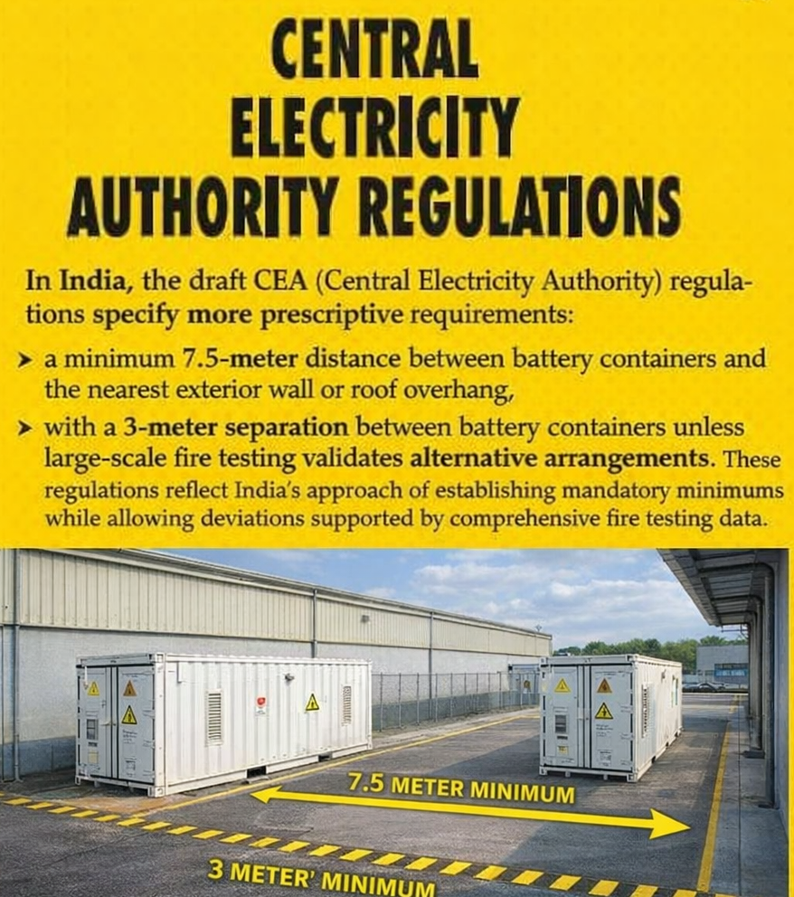
Ventilation and Exhaust Design
Proper ventilation is critical for preventing the accumulation of flammable gases released during normal operation and during thermal events. BESS containers must be designed with ventilation systems that achieve two objectives: maintaining normal operating temperatures and safely venting large volumes of toxic, flammable gases in emergency scenarios.
Standard requirements specify that ventilation must limit the maximum concentration of flammable gases to 25% of the Lower Explosive Limit (LEL) or maintain continuous ventilation at a rate of not less than 1 cubic foot per minute per square foot (0.31 m³/min/m²) of floor area.
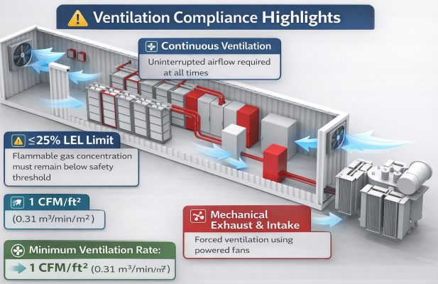
Emergency ventilation design must incorporate dedicated exhaust pathways that can rapidly remove gases released during thermal runaway, preventing internal pressure buildup that could lead to explosions. Automated louvers integrated into container design facilitate controlled gas release. Critically, ventilation systems must include standby power capable of maintaining operation for a minimum of two hours in the event of power loss. The CEA draft regulations mandate automatic shutdown of mechanical ventilation failure to prevent further hazard escalation.
Container and Structural Requirements
BESS containers must be constructed from non-combustible materials, with insulation materials also rated as non-combustible and achieving minimum 120-minute fire resistance ratings for both insulation and structural integrity. Containers must be explosion-proof, featuring deflagration vents designed to safely release pressure and flammable gases before they reach explosive concentrations.
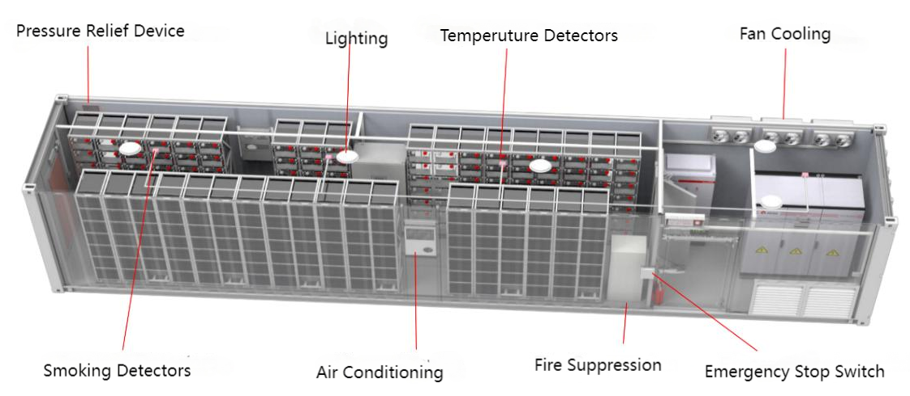
Structural design must account for the significant weight of battery systems and potential dynamic loads during seismic events or thermal emergencies. Thermal barriers—both materials and spatial separation—must be integrated between battery cells and modules to slow or prevent heat transfer that enables cascading thermal runaway propagation. The lessons from McMicken demonstrated that aluminum thermal barriers without sufficient gap can sag under extreme heat, allowing thermal propagation to continue unchecked.
Installation Safety Standards
The CEA draft regulations mandate several specific installation requirements:
Battery containers must achieve specified ingress protection ratings, with walk-in arrangements designed to prevent unauthorized access. A minimum 1.8-meter-high fence surrounds the installation, with manual emergency stop mechanisms (E-stop buttons) positioned for easy accessibility. Emergency lighting in enclosed areas ensures visibility during emergencies. Closed-circuit television surveillance and motion sensors provide continuous monitoring. Liquid electrolyte installations must include spill containment meeting prescribed standards.
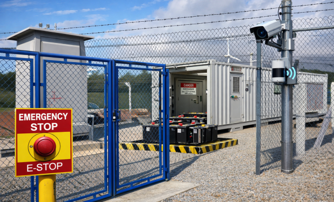
Advanced Fire Detection Technologies
Modern BESS facilities employ a multi-layered detection strategy that addresses fire risks at cell, module, rack, and container levels. Single-point detection systems have proven inadequate; comprehensive fire safety requires distributed sensing and intelligent analysis.
Temperature Monitoring Systems
Thermocouples and infrared sensors provide real-time temperature data at cell and module levels, allowing detection of overheating before dangerous conditions develop. Fiber optic temperature sensors offer high-precision distributed monitoring along battery racks, identifying localized heat buildup that might precede thermal runaway. Thermal imaging cameras mounted inside battery storage areas continuously scan for hotspots indicative of failing battery cells, with remote monitoring capabilities reducing the need for physical inspections and enabling automated alerts.
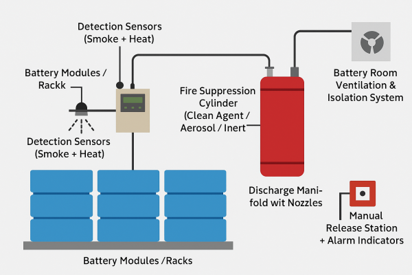
Gas Detection and Analysis
Gas evolution serves as an early indicator of battery cell failure. As internal chemical reactions break down the battery's components, specific gases are released in characteristic patterns that precede thermal runaway by minutes to hours.
Hydrogen (H₂) sensors detect one of the earliest and most flammable gases released, with specialized systems monitoring hydrogen concentrations at trace levels to enable early intervention before combustion occurs. Carbon monoxide (CO) and carbon dioxide (CO₂) sensors track electrolyte breakdown—notably, CO₂ detection has emerged as particularly valuable because CO₂ is one of the earliest and most consistently produced gases during thermal runaway onset, providing additional time for the BMS (Battery Management System) to execute protective actions before the battery reaches critical temperatures.
Advanced electrolyte vapor detection identifies volatile organic compounds (VOCs) released as a result of electrolyte decomposition. Since battery electrolyte degradation typically precedes thermal runaway, detecting VOCs provides an early warning window measured in minutes rather than seconds.
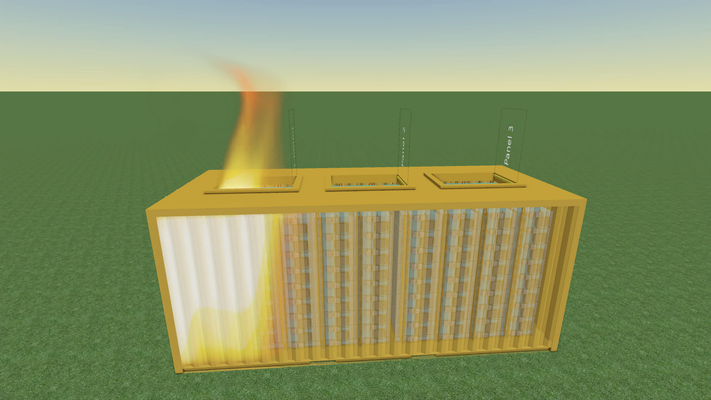
Research from the Electric Power Research Institute of Guangdong Power Grid Co., Ltd., China, demonstrated that an increase in CO₂ concentration can be detected before a battery reaches critical temperature, providing valuable advance warning for protective response.
Optical Smoke and Flame Detection
Laser-based smoke detectors use optical technology to identify smoke particles in their earliest stages, often before visible smoke becomes apparent. This enables faster detection and response compared to conventional ionization detectors. Video detection systems using cameras integrated with image recognition software monitor BESS areas for visual signs of smoke or flame, providing continuous surveillance independent of environmental conditions.
Battery Management Systems (BMS) with Integrated Monitoring
The Battery Management System functions as the first line of defense in thermal runaway prevention, continuously monitoring critical parameters at both cell and module levels. A robust BESS BMS measures and records:
- Cell and module voltage (detecting internal short circuits through abnormal voltage drops)
- Temperature at cell and module levels
- Current flow (identifying overcharging or over-discharging conditions)
- Pressure fluctuations (indicating cell swelling or venting)
- Gas evolution (hydrogen, carbon dioxide, and other gases)
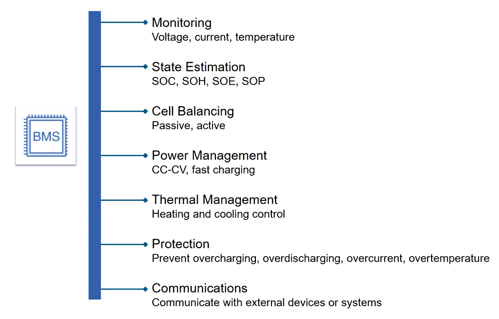
The BMS compares measured values against manufacturer specifications and operates preset protection settings specifically calibrated to prevent thermal runaway. When abnormalities are detected, the system triggers graduated responses:
Visual and audio alarms alert operators to emerging hazards. If parameters exceed safe limits, the BMS executes automatic charging and discharging shutdown. If cell temperature exceeds critical thresholds or gas concentrations indicate imminent failure, the BMS isolates specific battery modules, preventing cascading failures. Advanced BMS systems integrate directly with fire suppression and ventilation systems, enabling automatic coordinated response.
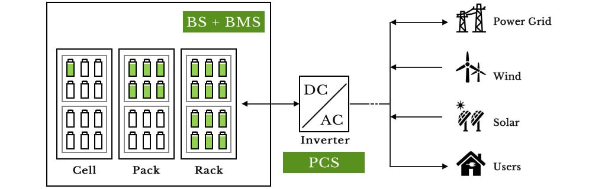
The evolution from battery monitoring systems (which track pack-level parameters) to advanced battery management systems (which control cell-level parameters and execute protective actions) represents a fundamental shift in BESS safety architecture.
Fire Suppression Systems and Strategies
Fire suppression for BESS must simultaneously achieve multiple objectives often in tension with each other: rapidly cooling overheated cells, halting thermal runaway propagation, managing flammable gas atmospheres, and protecting mission-critical equipment from water and chemical damage.
Water-Based Suppression Systems
Water mist systems represent one of the most effective suppression technologies currently available for BESS applications. Unlike traditional sprinkler systems that discharge large volumes of water, water mist systems generate extremely fine mist that operates through three simultaneous mechanisms: cooling the fire through evaporative heat absorption, blocking oxygen supply by displacing air with water vapor, and slowing the spread of heat and flames through the system.
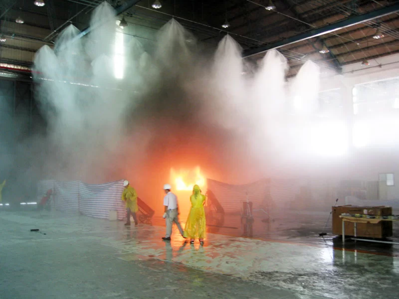
Research comparing suppression agents found that water mist systems exhibited superior fire-extinguishing performance, reducing peak average temperature by up to 133°C—substantially more than alternative agents. When sprayed at high pressure through precisely engineered nozzles, the fine mist covers larger areas with minimal water volume, reducing damage to equipment while increasing suppression effectiveness, particularly in enclosed BESS units.
Aerosol Suppression Systems
Condensed aerosol fire suppression systems operate through a fundamentally different mechanism than water or gas-based alternatives. These systems release fine potassium-based particles that chemically interact with the fire to disrupt combustion itself. Aerosols directly interrupt the chemical reactions that sustain flames, making them highly effective in confined spaces where chemical suppression is preferred over heat absorption or oxygen displacement.
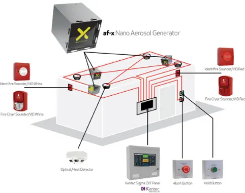
Third-party testing (DNV-GL) has confirmed that aerosol systems can suppress lithium-ion battery fires and, importantly, reduce oxygen concentration in enclosed environments sufficiently to prevent re-flash of fires. Aerosol generators are compact, require no pressurization or complex piping, and can be bracket-mounted within BESS containers without consuming valuable floor space. However, aerosol-only systems have demonstrated limitations when thermal propagation occurs—the residual aerosol particles provide extended protection against re-ignition but may not cool overheated cells sufficiently to prevent secondary thermal events.
Gas-Based Suppression
Inert and chemical gas suppression systems release pressurized gases that suppress fires either through heat absorption or by lowering oxygen concentration around the fire. Clean agents like FM-200 (hydrofluorocarbon) and Novec 1230 (hydrofluoroolefin) are widely used in energy storage applications because they act quickly and are compatible with sensitive electronics, leaving no residue.
However, the APS McMicken incident revealed a critical limitation: traditional gas suppression systems are designed to extinguish incipient fires in ordinary combustibles and cannot prevent or arrest cascading thermal runaway in BESS environments. Once thermal runaway cascades through multiple cells and modules, the energy release rate exceeds the suppression capacity of gas systems alone.
Immersion Cooling: Proactive Fire Prevention
Immersion cooling represents a paradigm shift from reactive suppression (fighting fires after they ignite) to proactive prevention (eliminating ignition conditions altogether).
In immersion cooling systems, individual battery cells are completely submerged in a non-toxic, non-corrosive, non-conductive (dielectric) liquid coolant. This coolant serves three simultaneous critical functions:
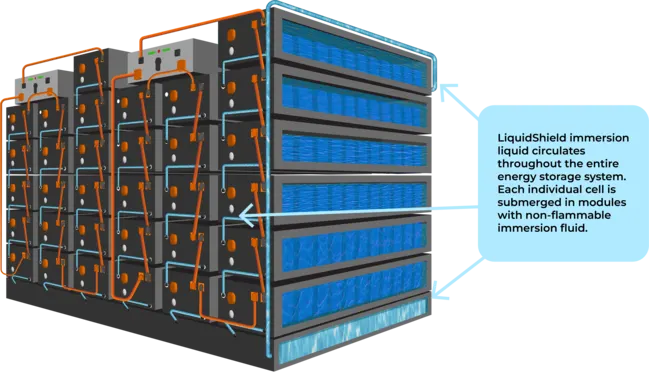
- Direct thermal management: The coolant absorbs heat directly at the cell surface, the point of greatest thermal energy generation, eliminating hotspots and ensuring uniform temperature distribution across all cells. This contrasts sharply with air-cooled or indirect water-cooled systems where thermal gradients can develop within modules, creating localized overheating conditions that enable thermal runaway initiation.
- Fire prevention: By surrounding battery cells, the immersion fluid limits oxygen availability at the cell surface and continuously dissipates heat that would otherwise support ignition and propagation. Even if a cell fails and enters thermal runaway, the surrounding cooling liquid removes heat faster than the chemical reactions can generate it, suppressing the event to the originating cell.
- System reliability: Stable operating temperatures maintained through immersion cooling dramatically reduce battery degradation, extending cycle life and improving long-term system performance.
Synthetic ester immersion fluids have emerged as the preferred choice for BESS applications. These engineered liquids exhibit flash points exceeding 260°C and auto-ignition temperatures above 300°C—substantially higher than mineral oil or silicone alternatives. Under controlled flammability testing, synthetic esters withstand prolonged exposure to heat sources without sustaining combustion, while mineral oil ignites and continues burning.
Hybrid Suppression Architectures
Leading BESS installations employ hybrid approaches combining multiple suppression technologies at different system levels. Pack-level suppression (inside battery enclosures) typically pairs immersion cooling or aerosol systems with continuous thermal monitoring. Container-level suppression employs water mist deluge systems with combustible gas detection to trigger automated activation.
The JUAND system exemplifies this approach: composite sprinklers at pack level provide detection and suppression of individual pack failures within 5 seconds, while rack-level sensors expand coverage to 4-8 packs within 10 seconds, and container-level total flooding systems protect the entire installation within 30 seconds. This multi-dimensional detection and suppression capability achieves 99.9% threat interception before human intervention becomes necessary.
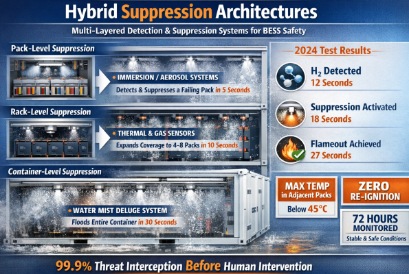
Field testing demonstrates the effectiveness of such layered systems: in a 2024 third-party test, hydrogen (H₂) evolution was detected within 12 seconds of thermal runaway initiation, suppression activation occurred at 18 seconds, and flameout was achieved at 27 seconds, with maximum temperatures in adjacent packs remaining below 45°C and zero re-ignition observed over 72 hours of subsequent monitoring.
Fire Safety Standards and Regulations
International Standards Framework
The global fire safety framework for BESS rests on three pillars: UL 9540 (equipment certification), UL 9540A (fire testing and thermal runaway propagation evaluation), and NFPA 855 (installation safety).
UL 9540 defines comprehensive safety tests covering electrical hazards, mechanical integrity, environmental stress, and fire protection features. It ensures that a grid-scale battery system has been rigorously tested as a complete unit and that critical safeguards—electrical protections, thermal controls, fire mitigation features—function correctly under stress. NFPA 855 explicitly requires that energy storage systems be listed in accordance with UL 9540, making this certification effectively mandatory for utility-scale installations in jurisdictions that adopt this code.

UL 9540A is the method by which thermal runaway propagation and fire behavior are evaluated in real-world scenarios. Testing proceeds hierarchically from cell-level evaluation, to module-level assessment, to full battery rack evaluation, and finally to installation-level testing in large-scale fire tests (LSFT). The data from UL 9540A testing informs site-specific design decisions and justifies deviations from prescriptive NFPA 855 requirements when equivalent safety can be demonstrated.
NFPA 855 establishes the minimum installation requirements: separation distances between BESS units, fire-resistance ratings of battery room enclosures, when sprinklers or special extinguishing systems are required, maximum allowable quantities of batteries in certain occupancies, and provisions for first responder safety. NFPA 855 acknowledges that UL 9540A data can justify alternative compliance when an installation does not meet prescriptive defaults.
India's Regulatory Framework
India has established a comprehensive regulatory framework for BESS fire safety through recent Central Electricity Authority (CEA) initiatives. The draft CEA Regulations, 2025, specify mandatory safety standards for battery chargers, fault tolerance design, fire suppression systems, battery management systems, power conversion systems, and cooling mechanisms.
Key provisions include:
- Battery Management Systems: Cell and module-level monitoring of voltage, temperature, current, and thermal runaway characteristics is mandatory. Visual and audio alarms must activate when parameters exceed specifications, with automatic shutdown when temperature limits are crossed.
- Installation Requirements: Battery containers must be positioned at minimum 7.5 meters from exterior walls or roof overhangs. If this distance is not achievable, large-scale fire testing (LSFT) validation is required. A 3-meter separation between containers is mandatory, again with LSFT as an alternative justification for closer placement.
- Fire Suppression: Containers with capacity 200 kWh and above must be equipped with automatic water-based fire suppression systems. Fire detection systems for smoke, gas, heat, and flame are mandatory for all containers rated 200 kWh or greater.
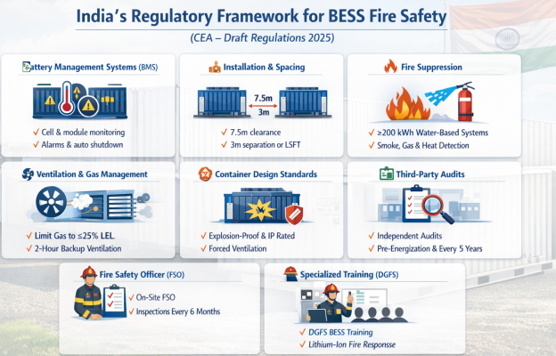
- Ventilation: Systems must limit combustible gas concentration to 25% of LEL or provide continuous ventilation at minimum specified rates. Standby power must sustain ventilation for at least two hours. Automated louvers safely release flammable gases, with automatic shutdown triggered if mechanical ventilation fails.
- Container Design: All containers must be explosion-proof with forced ventilation systems, automated louvers for flammable gas release, and compliance with ingress protection standards.
- Third-Party Auditing: Independent third-party fire safety audits are mandatory for all BESS installations, with audits conducted before initial energization and at five-year intervals during operation. The CEA has published a Standard Operating Procedure (SOP) for conducting these audits, requiring a minimum audit duration of two man-days for installations up to 100 MWh capacity, with additional time for larger systems.
- Fire Safety Officer: Each BESS installation must designate a fire safety officer responsible for regular inspections (minimum every six months), periodic testing, and maintenance of detailed records.
- Training: The Directorate General of Fire Services (DGFS) is mandated to issue specialized training guidelines for fire personnel handling BESS incidents, recognizing that lithium-ion battery fires require fundamentally different response tactics than conventional structural fires.
Conclusion
Fire safety in Battery Energy Storage Systems represents a complex interdisciplinary challenge requiring integration of advanced detection technologies, sophisticated suppression systems, rigorous design standards, and specialized operational practices. The evolution from reactive fire suppression to proactive thermal management—exemplified by immersion cooling—signals the direction of industry development: designing systems that make fires impossible rather than simply fighting fires after they occur.